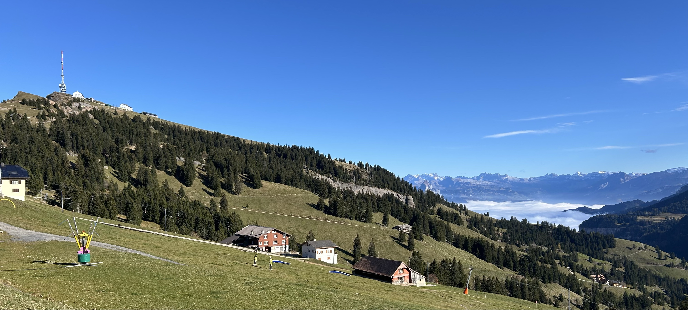
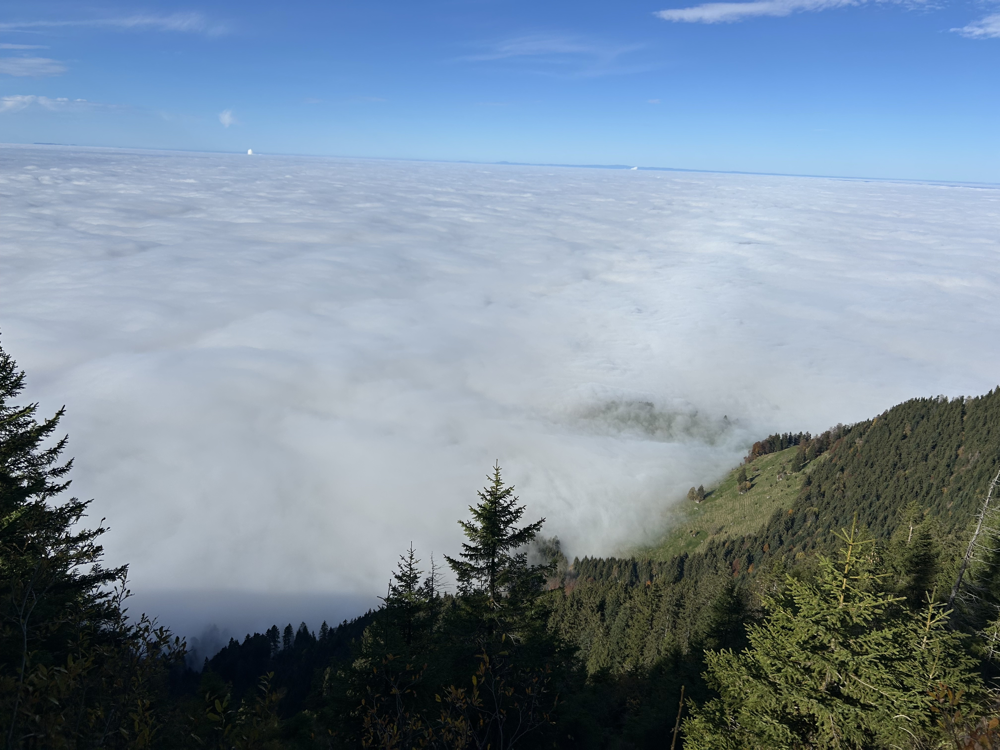
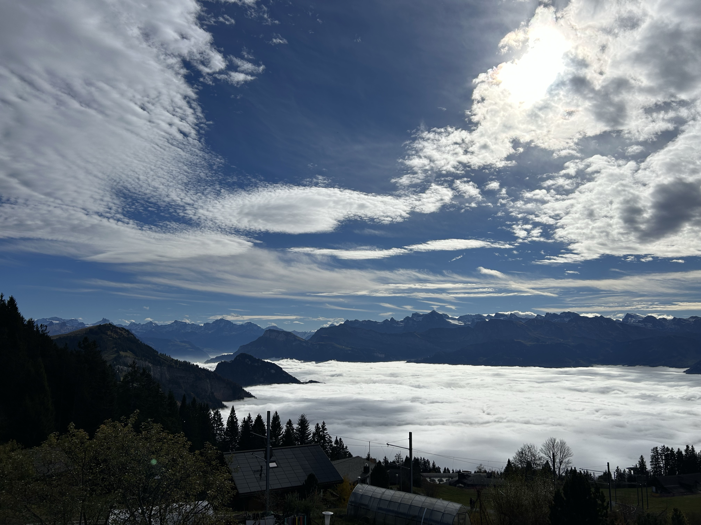

Methodological agenda manuscript
The principal workshop output will be a manuscript establishing a methodological agenda for forecasting ecosystem stability through response diversity.
8–10 December 2026 · Mount Rigi, Switzerland
Developing a shared scientific basis for forecasting ecosystem stability through response diversity.
Why this workshop
Biodiversity projections increasingly describe expected changes in species occurrence, abundance and community composition. These projections are essential, but they do not by themselves show whether ecosystem functions and services will persist under multifarious environmental change. The workshop asks how forecasting can connect biodiversity change to stability-relevant mechanisms and outcomes.
Response diversity—the variation in environmental responses among species, populations or functional groups that contribute to similar ecosystem functions—is a promising mechanism-oriented predictor. It is not itself a stability metric, and its ability to predict observed stability needs explicit empirical validation.
The workshop goal is to develop a shared scientific basis for forecasting ecosystem stability through response diversity.



Workshop focus
The principal workshop output will be a manuscript establishing a methodological agenda for forecasting ecosystem stability through response diversity.
The manuscript will include a workshop-generated pathway that prioritises the research and delivery tasks needed to operationalise response diversity.